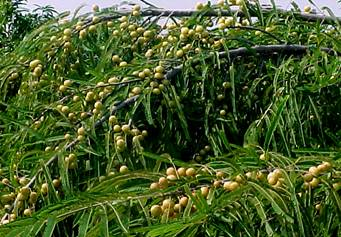
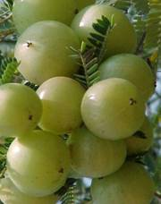

HORT 282 :: Lecture 31 :: AONLA

AONLA
(Emblica officinalis Gaertn., Syn. Phyllanthus emblica, Euphorbiaceae)
A small to medium sized deciduous tree, 8-18m in height with crooked trunk and spreading branches. Leaves simple, sub sessile; flower greenish yellow; fruit nearly spherical pale yellow with 6 vertical furrows.
Regional Names
English |
Indian Gooseberry |
Bengali |
Amlaki |
Gujarati |
Ambala, Amala |
Hindi |
Amla, Aonla |
Malayalam |
Nelhi |
Marathi |
Avala |
Kannada |
Amalaka, Nelhi |
Tamil |
Nelhi |
Telugu |
Usirikai, Usirika |
Distribution
Wild or planted throughout the deciduous forests of tropical India and on hill slopes up to 1800M.
Part used
Fruit, seed, leaves, root, bark and flowers.
Medicinal properties and uses
Amla is an antioxidant with the free radical scavenging properties, which may be due to the presence of high levels of super oxide dismutase. It is effective in the treatment of peptic ulcer, dyspepsia, diabetes etc. The fruits exhibit hypolipidaemic and antiathero-sclerotic effects in rabbits and rats. Further reported are hepatoprotective, antioxidant, antimutagenic, cytoprotective, anti tumour & antimicrobial.
Soil
A light as well as medium heavy soil except purely sandy soil is ideal for amla cultivation. The tree is well adopted to dry regions and can also be grown in moderate alkaline soil.
Climate
It is a tropical plant. Annual rainfall of 630-800 mm is ideal for its growth. The young plant up to the age of 3 years should be protected from hot wind during may-June and from frost during winter months. The mature plants can tolerate freezing temperature as well as high temperature up to 460c
Varieties
The varieties recommended for cultivation are Banarasi, Chakaiya, Francis, NA-4 (Krishna), NA 5 (Kanchan), NA-6, NA-7, NA-10 and BSR-1 (Bhavanisagar).
Cultivation
Propagation
Amla is generally propagated by shield budding. Budding is done on one year old seedlings with buds collected from superior varieties yielding big sized fruits. Older trees or poor yielder can be changed into superior types by top working.
Planting
The pits of 1 m2 are to be dug during May-June a a distance of 4.5 m spacing and should be left for 15-20 days exposing to sunlight. Each pit should be filled with surface soil mixed with 15 kg farm yard manure and 0.5 kg of phosphorus before planting the budded seedling.
Irrigation
Young plants require watering during summer months at 15 days interval till they are fully established. Watering of bearing plants is advised during summer months at bi-weekly interval. After the monsoon rains, during October-December about 25-30 litres of water per day per tree through drip irrigation should be given.
Training and pruning
Leaving only 4-5 well shaped branches with wide angle at about 0.75 m from the ground level, other dead, diseased week crisscrossing branches and suckers should be pruned off at the end of December.
Mulching and Intercropping
During summer, the crop should be mulched with paddy straw or wheat straw at the base of the tree up to 15-20 cm from the trunk. Inter crops like green gram, black gram, cow pea and horse gram can be grown up to 8 years.
Plant Protection
Major insect: Bark Eating caterpillar (Inderbella tetronis)
Major disease: Rust (Ravenellia emblicae)
Harvesting and yield
Amla tree starts bearing after about 4-5 years of planting. The fruits are harvested during February when they become dull greenish yellow from light green. The mature fruits are hard and they do not fall at gentle tough and therefore vigorous shaking is required. Fruits can also be harvested using long bamboo poles attached with hooks.
A mature tree of about 10 years will yield 50-70 kg of fruit. The average weight of the fruit is 60-70 g and 1 kg contains about 15-20 fruits. A well maintained tree yields up to an age of 70 years.
*****************
- Amla belongs to the family ____________
- Antioxidant present in Amla __________
- Give two varieties of Amla _______
- Major disease of Amla is __________
- Propagation method of Amla ____________
| Download this lecture as PDF here |